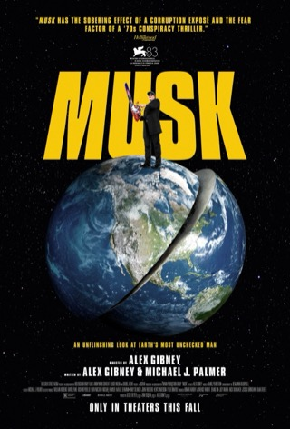

Musk
From the festival
Play Trailer Elon Musk’s remarks—that it’s possible our contemporary reality is actually a computer simulated video game designed by a superior intelligence—inspired veteran filmmaker Alex Gibney in making this epic, four-hour documentary about the mercurial billionaire. Gibney focuses on Musk’s early success as a Silicon Valley start-up whiz and how he took financial control of Tesla while exaggerating his role in designing it, but also gives us the genuinely impressive story of the evolution of SpaceX. The darker side involves Musk’s brutally callous treatment of the many women who bore his children, and the way his paranoia about criminal liability drove him to become one of the most powerful power brokers in right-wing politics. When Gibney gets to the DOGE phase of Musk’s career and his alliance with Donald Trump, he confirms his starting thesis by demonstrating how the aesthetics of videogame reality are the best model for Musk’s approach to restructuring the United States government. Musk is now the wealthiest person in human history, and Gibney shows how the spreading influence of AI gives Musk unparalleled power to collect data on any and every person on this planet. This cumulative portrait of Elon Musk is dispassionate, mesmerizingly complex, and terrifying. —Larry Gross
- Directed by
- Alex Gibney
- Country
- USA
- Running time
- 232 minutes
- Premiere
- Bay Area Premiere
- With
- Zoë Schiffer
- Guests
- Jessie Deeter Producer, Zoë Schiffer SF Journalist/Protagonist
Source: Festival website programme (MVFF49): Wayback Machine copy; Festival film page: Wayback Machine copy; Poster from IMP Awards